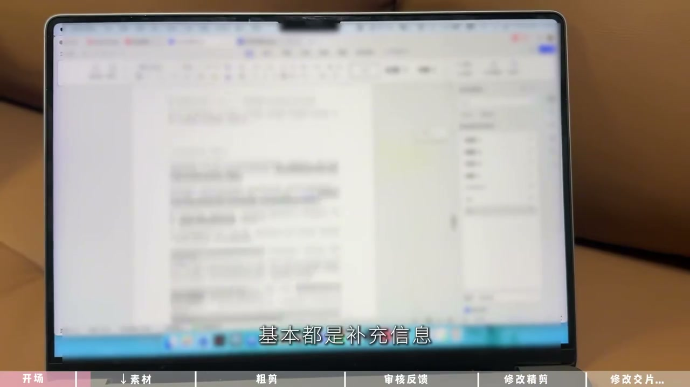
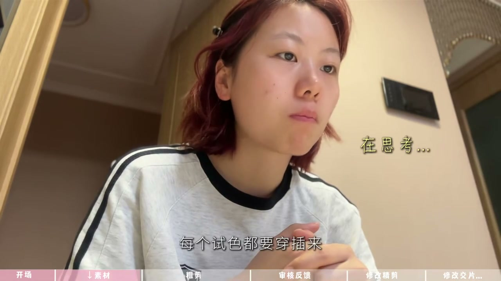
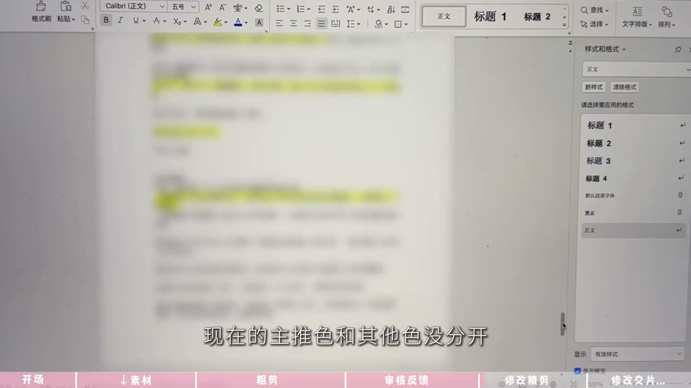

01
中文
单主给我加薪啦，因为月初给单主剪的那条视频爆了。
EN
My client gave me a raise, because the video I cut earlier this month blew up.
表达提示Success brings more work.

Scene English · 剪辑 · 口播接单复盘
An 800-Yuan Talking-Head Ad! How Long Does the Edit Take?
🎧 语音讲解
Opening: My client gave me a raise! A vide…
情境记录一条800元口播剪辑的全过程。
单主给我加薪啦，因为月初给单主剪的那条视频爆了。
My client gave me a raise, because the video I cut earlier this month blew up.
表达提示Success brings more work.
这一条开箱口播800元子，看看我需要剪多久吧。
This unboxing talking-head ad is 800 yuan—let's see how long it takes to cut.
表达提示The 800-yuan job.
The 800-yuan job.

Preparation: the brand sent lots of supple…
情境理解需求、整理素材是剪辑的前置工作。
这次的品牌方给的物料内容还蛮多的，基本都是补充信息，越要契合单主的风格。
The brand sent quite a lot of materials, mostly supplementary info that must match the client's style.
表达提示Study the brand materials.
我还得去了解每个口红的色号编号，以及哪个是重点。
I also need to learn every lipstick's shade number and which one is the highlight.
表达提示Know the products.
素材总共40G，单主分为了三段，一段是上嘴，一段是手臂试色，还有一段是全景。
The footage totals 40G in three parts: lip swatches, arm swatches, and wide shots.
表达提示Organize the footage.
其实也就是一段A roll两段B roll，每个色号都要穿插来。
Basically one A-roll and two B-rolls, weaving each shade in.
表达提示Interleave A and B rolls.
Know the products.
Organize the footage.

Reflection: this kind of job, lucky I'm a …
情境对职业成长的回望与感慨。
感觉这种活如果是一个直男来剪，估计看都要看迷糊。
I feel a guy would be completely lost trying to edit this.
表达提示Context and taste matter.
我上初高中的时候，大多数这种美妆视频都是这样全系列长视频，当时觉得哇塞好华丽。
In high school, most beauty videos were these long full-series ones—I thought they were gorgeous.
表达提示The childhood dream.
我以后也要有自己的全系列彩妆，这种视频现在是我在剪了。
I wanted my own full makeup line someday—and now I'm the one cutting these videos.
表达提示Dreams come around.
The childhood dream.
Dreams come around.
First cut: the rough cut is done at 4 PM—4…
情境粗剪交审，反馈后进入修改。
现在已经4点了，粗剪完成，把40多分钟的素材剪到了8分钟多一点。
It's 4 PM now—the rough cut is done, trimming 40+ minutes to just over 8.
表达提示40 minutes to 8.
先发给单主和PR，让他们审核一下看整体的素材节奏。
Send it to the client and PR to review the overall pacing.
表达提示Get review first.
反馈意见下来了，主要就是说现在的主推色和其他色没分开。
Feedback arrived—mainly that the hero shade isn't separated from the others.
表达提示Hero shade needs separation.
40 minutes to 8.
Get review first.

Revising: extend the hero shade's screen t…
情境按明确意见修改，效率更高。
让主推时间加长，其他色分成4屏展示就可以了。
Extend the hero shade and show the rest in a 4-panel display.
表达提示Hero longer, rest in panels.
现在已经6点20了，更改过的版本我已经发过去了。
It's 6:20 now, and I've sent over the revised version.
表达提示Rapid turnaround.
这个品牌方其实蛮专业的，直接明确指出了要什么不要什么，所以修改其实不是坏事。
This brand is quite professional—they said exactly what they want, so revisions aren't a bad thing.
表达提示Clear briefs beat guesswork.
Rapid turnaround.

Fine cut: PR approved, so straight into th…
情境精剪+包装完成首轮交付。
为了规避版权，我所有的字体都使用的可商用的。
To avoid copyright trouble, all fonts I use are commercially licensed.
表达提示Commercial-safe fonts.
现在是7点50，我已经包装完了，整体时长现在是7分钟。
It's 7:50, I've finished packaging—the total is 7 minutes.
表达提示Packaged at 7 minutes.
OK，发过去了，吃饭去。
OK, sent it off—time to eat.
表达提示First delivery done.
Commercial-safe fonts.
Packaged at 7 minutes.
Next day: at 8:30 PM PR says they'll feedb…
情境交付周期与反馈闭环。
8点半了，PR说他那边明天早上再给我反馈，单主这边说没什么问题。
It's 8:30, PR will give feedback tomorrow morning—the client has no issues.
表达提示Overnight review.
早上好，现在是早上8点，PR那边给了修改方案，就是一些小问题。
Good morning, it's 8 AM—PR sent minor tweaks.
表达提示Morning revisions.
我估计上午就能给他交片。
I expect to deliver the final by lunchtime.
表达提示Delivery by noon.
Overnight review.
Morning revisions.
说收到新单
说素材分类
说反馈修改
说商用字体
品牌方的补充信息都要消化，视频要贴合单主风格。
主推色要加长，其他色分四屏展示。
规避版权，字体必须可商用。